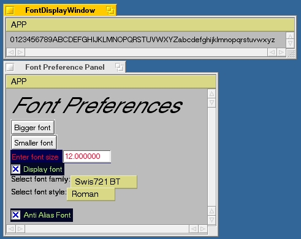
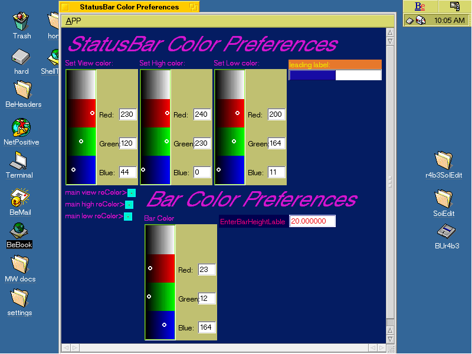

BeGUI is implemented as a shared library. Programmers who wish to present font and color sensitive applications which may be user localized for language create their apps designed around the concepts put forth in the BeGUI Programmer's Reference.
BeGUI has global preference settings for many user interface objects (things like buttons and gadgets). These settings control the font family and size with which these items are drawn. They also control the color schemes these items use. BeGUI also lets an application store critical data like the size and position of a window, or a user preference (like if fonts are anti-aliased).
BeGUI is usually accessed from a menu in an application. It is up to each application developer to choose how to present the user with direct access. BeGUI can also be accessed using the PrefsEDgar application which is the demo application provided with the library.
Use your favorite BeGUI-based application (or PrefsEDgar, which has a item in the "APP" menu) to open the main preference window. It should look something like this:
The preference panel gives access to all the other specific preference panels. Select any of the buttons to get control over the specific gadget listed on it's label.
There are two general preference settings on this panel as well. These checkboxes control which of the two styles of color controls you will be presented with when making color selections in the interface color preference panels. By default, both are on. One is a standard BColorControl the other is my homemade roColour (check out: http://www.rodesign.com) Colorwell. You may have either or both on, of course, if you have neither on, you will have no controls for color selection--a dumb move!

The font preference panel gives access to all the font specific controls. The first two buttons, "Bigger Font" and "Smaller Font" give rapid access to minor size changes, each button selection changes the font by a single whole unit (fonts are scaled in "points", and can be in decimal fractions, like 15.3).
Next comes a floating point entry gadget which allows you very exacting control over font point size. Currently this gadget is checked to make sure that you do not set it to zero or less, and has an artificial upper limit of 51000. If anyone finds this upper limit restrictive, the code in fontPrefWindow.cpp's function ResetFontSize() (see fontPrefWindow.cpp) may be easily changed to allow larger sizes.
The next item is a checkbox which lets you turn the Font Display Panel on or off. The font display panel is there for reference, so you may view the font of your choice in it's selected size. It may well be hidden behind the font preference panel when the default settings are in effect. Drag it out from behind to better view your results.
The next two items are pop up menus which allow you to set the font family (from the BeOS's internal list of available fonts), and it's style. Selecting a family will automatically change the style list to that of the family selected. If the previous family's selected style is not supported, the family's idea of what is the "most regular" style is used.
The last item is a checkbox for anti-aliasing. Some fonts and/or color schemes might look best when not anti-aliased. Try both values and watch the results in the Font Display Panel. Sometimes it takes the Magnifier application to tell the difference.
The font display panel is there only as a reference. It just prints the English alphabet in minuscule and majuscule plus the decimal digits.

This is an example MyStatusBar panel and gives you a good idea of how things look. Notice the example status bar in the top right corner. Each specific gadget panel has an example of the gadget in this location. Playing with the controls will change this example gadget in real-time.
BeGUI uses libprefs by Jon Watte to store preference data. There is one global BeGUI preference directory created in /boot/home/config/settings called _LP_x-EFM5.BeGUIPref in which all global BeGUI settings are stored. Each application will create it's own directory in /boot/home/config/settings with a name like _LP_x-EFM5.PrefsEDgar in which all application specific data is stored. BeGUI has all the default settings built in, so you may delete the file /boot/home/config/settings/_LP_x-EFM5.BeGUIPref if you make your preferences so interesting that they are abhorent!
for version 1.4.2
The BeGUI
Book
Copyright © 1998-1999 Ed Musgrove Be Developer #2076. All rights reserved.
edgar@harbornet.com
emusgrov@linknet.kitsap.lib.wa.us
Last modified March 17, 1999.